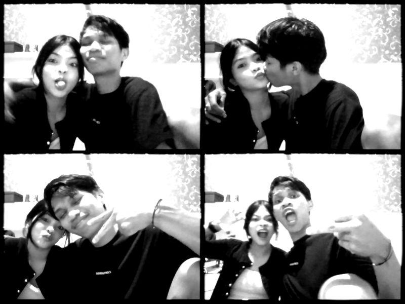
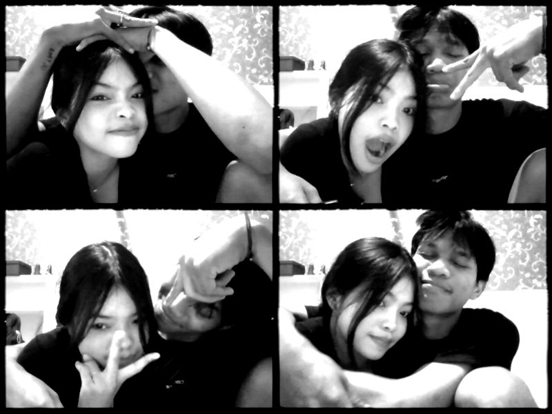
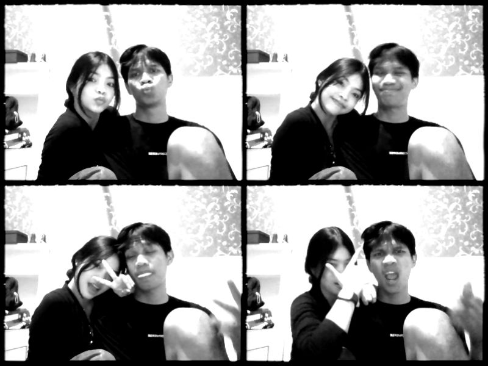
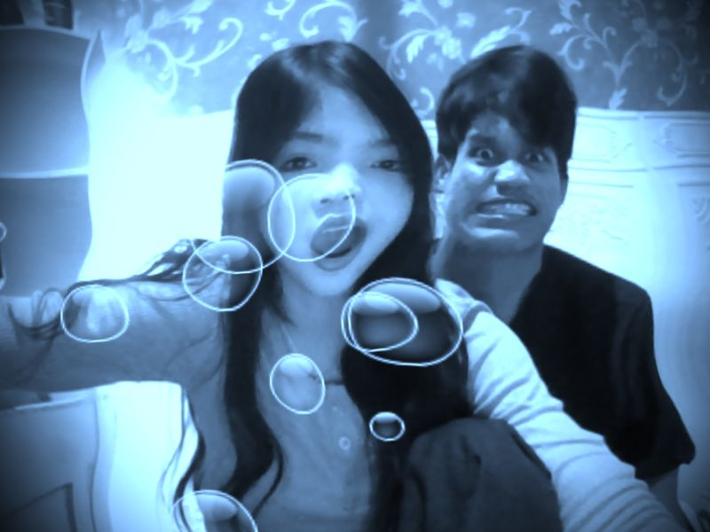
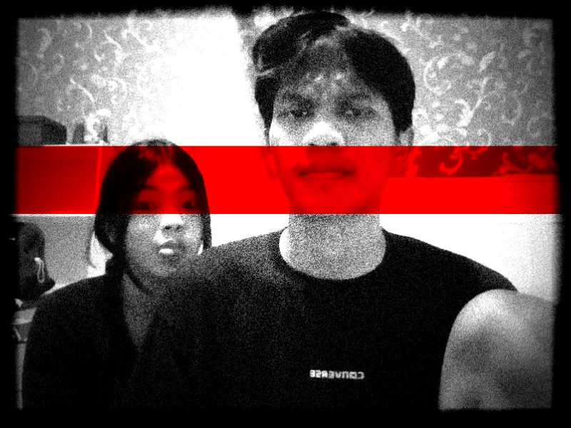
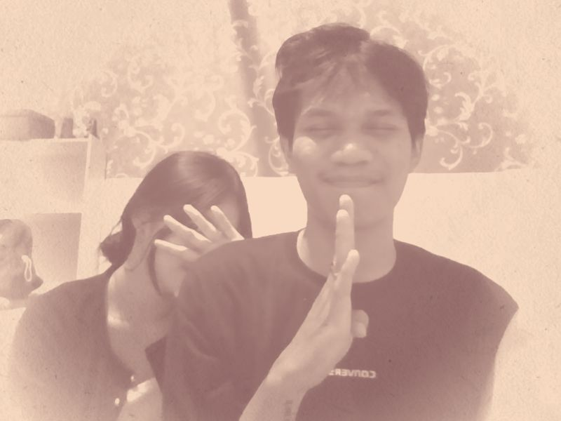

Maafin aku,
Sayang Aku.
Aku tahu mungkin sekarang kamu masih kecewa. Aku nggak mau memaksa kamu buat langsung baik-baik aja. Aku cuma ingin kamu tahu, aku sungguh-sungguh ingin memperbaiki semuanya.
Ada yang ingin
aku sampaikan.
Bukan untuk membenarkan kesalahanku. Aku ingin bertanggung jawab atas apa yang sudah terjadi.
Sayang aku, maafin aku, ya.
Aku sadar aku sudah melakukan kesalahan dan mungkin bikin kamu kecewa, sedih, atau merasa nggak dihargai. Aku minta maaf karena sikapku sudah bikin hati kamu nggak tenang. Aku tahu mungkin ada hal-hal yang aku lakukan atau ucapkan yang masih membekas di hati kamu, dan aku benar-benar menyesal karena sudah membuat orang yang aku sayang merasakan hal seperti itu.
Aku nggak mau cuma bilang “maaf” lalu berharap semuanya langsung kembali seperti semula. Aku sadar kalau memperbaiki sesuatu yang sudah terlanjur terluka itu nggak semudah membalikkan telapak tangan. Aku tahu kepercayaan dan perasaan kamu itu penting, dan aku harus membuktikannya lewat sikap, bukan cuma kata-kata. Aku nggak mau terus mengulang kesalahan yang sama dan membuat kamu merasakan sakit yang sama lagi.
Aku nggak minta kamu langsung memaafkan aku hari ini. Kalau kamu masih kecewa, masih sedih, atau masih butuh waktu buat menenangkan hati, aku akan berusaha menghargainya. Aku nggak mau memaksa kamu buat baik-baik aja hanya demi membuat aku merasa lebih tenang. Aku cuma berharap, suatu saat nanti, saat hati kamu sudah lebih siap, kamu masih mau memberikan aku kesempatan untuk mendengarkan semua yang kamu rasakan dan memperbaiki apa yang masih bisa aku perbaiki.
Jujur, aku masih berharap kita bisa baik-baik lagi. Aku masih ingin melihat kita tersenyum bersama, bercanda seperti biasanya, dan menjalani hari tanpa ada rasa sakit yang terus kita pendam. Aku kangen saat semuanya terasa sederhana, saat kita bisa saling memahami tanpa harus merasa sendirian dalam hubungan ini. Tapi aku sadar, aku nggak bisa meminta semuanya kembali seperti dulu kalau aku sendiri belum bisa memperbaiki apa yang membuat semuanya berubah. Makasih karena sudah hadir di hidup aku. Makasih karena sudah pernah menyayangi aku, bertahan bersama aku, dan memberikan banyak hal yang mungkin selama ini belum cukup aku hargai. Aku sayang kamu, bukan cuma saat semuanya baik-baik aja, tapi aku juga mau belajar menjadi pasangan yang lebih baik saat keadaan sedang sulit. Aku ingin belajar memahami kamu lebih dalam, mendengarkan kamu tanpa selalu membela diri, dan menjaga perasaan kamu dengan lebih baik. Aku nggak tahu apakah aku masih punya kesempatan untuk memperbaiki semuanya. Tapi kalau kesempatan itu masih ada, aku ingin membuktikan lewat perubahan nyata kalau aku bisa belajar dari kesalahan ini. Aku nggak mau janji yang terdengar indah tapi akhirnya cuma jadi kata-kata. Aku ingin pelan-pelan menunjukkan bahwa penyesalan aku benar-benar nyata. Dan kalau sekarang kamu belum bisa memaafkan aku, nggak apa-apa, ya, sayang. Aku nggak akan menyalahkan kamu atas perasaan yang kamu punya. Kamu berhak merasa kecewa, kamu berhak mengambil waktu, dan kamu berhak menentukan apa yang terbaik buat diri kamu. Aku cuma ingin kamu tahu kalau permintaan maaf ini datang dari hati, bukan sekadar karena aku takut kehilangan kamu, tetapi juga karena aku sadar kamu nggak pantas menerima hal-hal yang membuat kamu terluka. Aku masih sayang kamu. Aku masih peduli sama kamu, dan aku masih berharap ada jalan untuk kita memperbaiki semuanya. Tapi aku nggak mau memaksa hati kamu untuk kembali hanya karena hati aku masih menginginkan kamu. Kalau memang masih ada ruang untuk aku, aku ingin menggunakan kesempatan itu sebaik mungkin. Bukan untuk mengulang kesalahan yang sama, melainkan untuk belajar mencintai kamu dengan cara yang lebih baik. Sekali lagi, maafin aku, ya, sayang. Aku nggak meminta kamu melupakan apa yang sudah terjadi. Aku cuma berharap suatu hari nanti, ketika kamu mengingat semua ini, kamu juga bisa melihat bahwa aku sungguh-sungguh berusaha memperbaiki diri dan menjadi seseorang yang lebih baik untuk kamu.
Dengan tulus, dari aku yang masih belajar mencintai kamu dengan lebih baik. ♡
Hal-hal kecil
yang aku simpan.
aku menyimpan hal-hal kecil tentang kamu, bukan karena semuanya sempurna, tapi karena semuanya pernah membuat aku bahagia. hal-hal sederhana yang mungkin nggak kamu sadari, tapi selalu punya tempat tersendiri di hati aku. 🤍







Untuk menemani
kamu membaca.
Musik untuk kita ♪
Musik akan mencoba diputar saat halaman dibuka, dengan suara yang naik perlahan. Kalau browser memblokir autoplay, sentuh tombol Putar musik.
File musik: assets/musik.mp3
Video kenangan ♡
aku simpan video ini bukan untuk terus hidup di masa lalu, tapi karena aku nggak mau melupakan hal-hal baik yang pernah kita punya. setiap detiknya punya cerita, setiap senyumnya punya arti. apa pun yang terjadi nanti, aku akan selalu bersyukur karena pernah punya kenangan seindah ini sama kamu. 🤍
Video 1: assets/video-1.mp4
Video 2: assets/video-2.mp4
Aku boleh coba
memperbaikinya?
Kamu bebas merasakan apa pun yang kamu rasakan. Aku akan menghargai jawabanmu, termasuk kalau kamu masih butuh waktu.